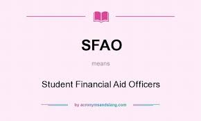

Mehran University of Engineering & Technology is a public research university located in Jamshoro, Sindh, Pakistan focused on STEM education. Established in July 1976, as a campus of the University of Sindh, and a year later was chartered as an independent university. The academician S.M. Wikipedia Address: Mehran University of Engineering and Technology, Indus Hwy, Jamshoro, Sindh 76062 You visited 2 years ago Hours: Closes soon ⋅ 5PM ⋅ Opens 8AM Tue Former names: Sindh University Engineering College Students: 7,500+ Doctoral students: 70+ Appointments: muet.edu.pk Vice-chancellor: Mohammad Aslam Uqaili
1. Candidates who have passed their HSC Part-I (Pre-Engineering) in annual examination 2019 or prior up to annual examination 2016 with at least 60% aggregate marks (Grace marks given by the board for improvement of grade shall not be counted) are eligible for admission in Civil, Electrical, Mechanical, Mechatronics, Computer Systems, Software, Electronic and Telecommunication Engineering, Bio-Medical Engineering, Industrial Engineering & Management, Textile, Chemical, Petroleum & Natural Gas, Environmental Engineering & Management, Mining and Metallurgy & Materials Engineering under Regular and Self- Financing Scheme. 2. The candidates having HSC Part-I (General Science) with at least 60% aggregate marks (Grace marks given by the board for improvement of grade shall not be counted) are only eligible for admission in Computer Systems, Software, Electronic and Telecommunication Engineering under Regular and Self- Financing Scheme 3. The candidates having HSC Part-I (Pre-Medical) with at least 60% aggregate marks (Grace marks given by the board for improvement of grade shall not be counted)are only eligible for admission in Bio-Medical Engineering. Note: All the candidates will have to upload HSC-I mark certificate showing 60% marks and above by their concerned Board. They shall be allowed provisionally to appear in the computer-based pre-admission entry test to be conducted from the 3rd week of August 2020 at MUET, Jamshoro. However only those candidates shall be considered in the merit list who not only qualify the preadmission test by securing at least 40% score but also secure 60% marks in HSC-I and meet the eligibility criteria mentioned above. (Grace marks given by the board for improvement of grade shall not be counted).
For any further information please visit our website
www.muet.edu.pkand
www.muet.edu.pkor contact the admission office.

This office is dedicated to elevate the socio-economic position of the needy & deserving undergraduate students by providing access to quality education through need-based and merit-based Scholarships / Financial Assistances and interest free educational Loans.
Student Financial Aid Office